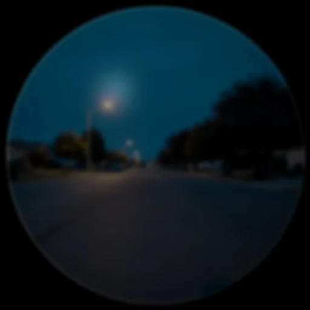
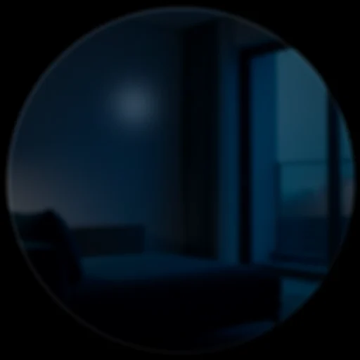
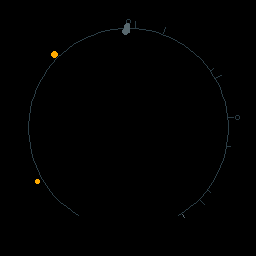
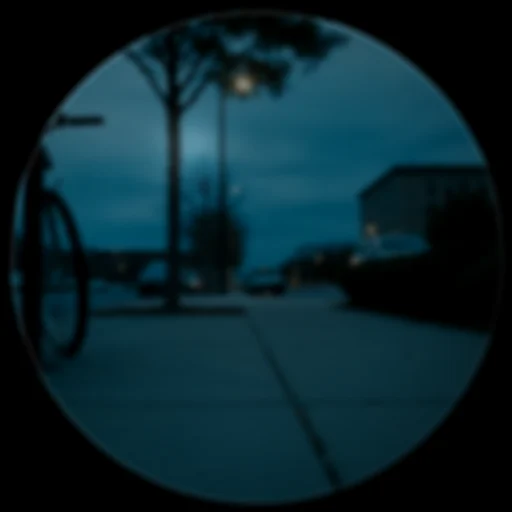
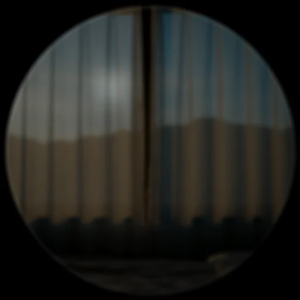
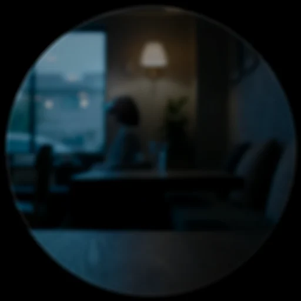
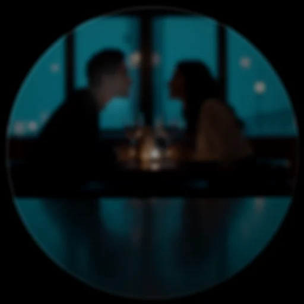
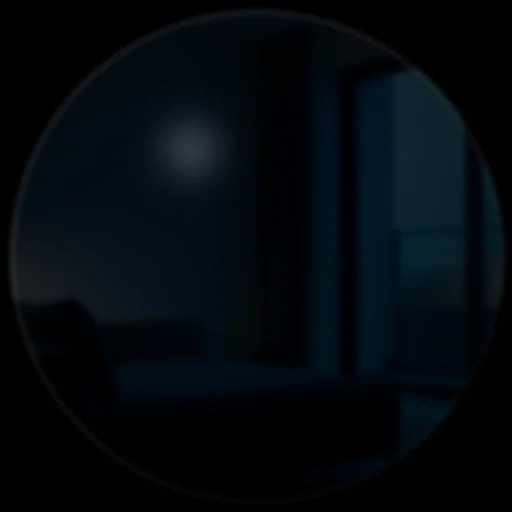

HUD cards — the full gallery
Every card DreamLayer can put on the glass, rendered by the product's own
renderer. Card payloads are plain dicts built by
host-python/src/dreamlayer/hud/cards.py; the device draws them with
halo-lua/display/renderer.lua, and a pixel-mirrored Python renderer
(hud/renderer.py) drives these stills and the demo pipeline.
Thirty-three card types have bespoke device-Lua renderers today, and a
structural safety net guarantees the rest: any card type without a bespoke
draw routes through its layout table or a minimal titled fallback — no
card, present or future, can ever render a black frame on the glass. No
card is mirror-only anymore. And the catalog is now deliberately slow to
grow: under the platform's
output-shape rule, new
text-shaped output ships as a figment (no renderer twin at all); a new
card must earn its bespoke draw with custom geometry and overlay
semantics.
Each entry lists: when the card appears, what it shows, its materials (Solid) and motion (Lumen), and how it leaves. "Dismiss" is the auto-dismiss time in milliseconds (0 = stays until acted on).
Resting and system
ReadyCard

- Appears: on boot, on
show_ready, on resume from the veil, on connect. - Shows: the calm mark — a memory-trace core inside gradient rings with satellite dots. No text; it means "I am here and not listening."
- Materials/motion: gradient arc rings (
RAMP_MEMORY), staggered layer condense.
QueryListeningCard

- Appears: single click, or "Hey Juno" — the ask posture.
- Shows: a cardioid microphone glyph over a 32-bar waveform. With live
ampframes from the host (~15 bytes, capture-time only) the bars track your actual voice through the palette's voice slot; without them the waveform self-runs exactly as before. - Dismiss: on result.
ListeningCard

- Appears: the moment Juno wakes, from any enabled source — voice ("Hey Juno"), tap, gaze, raise, or gesture. Shown only if visual wake feedback is on.
- Shows: a pulsing ring plus the wake source; carries earcon
wakeand haptictickon the payload (each independently toggleable).
LoadingCard
- Appears: while a tier is thinking.
- Shows: three ghost rings and 12 static segments. Nothing rotates — a palette chase walks light around the segments at the old spinner's RPM (900 ms), so reduced-motion users get a clean static ring instead of a frozen spinner.

ErrorCard
- Appears: on a failure worth telling you about ("BLE timeout").
- Shows: an amber triangle and one plain sentence. The attention ring draws as a single calm sweep — no flashing.
- Dismiss: 4000.
LowConfidenceCard
- Appears: when recall has nothing above threshold.
- Shows: "Not sure" in ghost ink. DreamLayer says I don't know rather than guessing.
- Dismiss: 3000.
Memory
SavedMemoryCard
- Appears: the instant a moment is kept — a scene ingested, a conversation captured, a nod-to-save.
- Shows: a giant double-struck check inside concentric gradient rings over a soft glass pane; SAVED in hero type.
- Motion: the check draws on with a soft spring, a chime ring expands (220 ms), and a 12-particle burst fires at hold — the one small celebration in the system.
- Dismiss: 1200.
ObjectRecallCard
- Appears: "where did I leave my keys?" — object recall.
- Shows: a spatial scene, not a list: the place as a translucent field, the object as a layered diamond jewel with orbit arcs and bloom, you as a dot at the bottom, and a continuous gradient trace connecting the two (dim at you, bright at the thing). Jewel hue encodes confidence; footer carries last-seen time.
- Motion: the
conductflair — a light wave flows along the trace from place to object every 2.4 s. - Dismiss: 3500.
CommitmentRecallCard
- Appears: when a promise is recalled — or the moment one is captured from your own speech ("I'll send you the lease by Friday").
- Shows: who, what, when as three chain links; the live link is a glowing glass capsule with gradient connectors.
- Motion: the chain forges link by link on snappy springs.
- Dismiss: 4000.
CommitmentDriftCard
- Appears: when a tracked promise starts to slip
(
orchestrator.tick_drift). - Shows: the task with a decay rail on the left — the live bar is confidence times (1 - decay); urgency shifts amber to danger at decay 0.6.
- Motion: a slow idle pulse on the confidence dot (600 ms sine).
- Dismiss: 4500.
ProactiveMemoryCard
- Appears: you arrive somewhere that holds a memory (
on_place). - Shows: the remembered context under a five-ray radial field with a bloomed tip.
- Dismiss: 3500.
WorldAnchorCard

- Appears: in Dream Mode, when the Ghost Layer finds a memory pinned to where you are standing.
- Shows: a pale MEMORY ECHO — deliberately at 20 percent opacity, the faintest thing the system draws.
- Motion: Ghost-Wake — each character wakes with per-character Perlin
jitter over 320 ms. Renders through the dream path
(
dream_renderer.lua). - Dismiss: 8000.
TimeScrubNodeCard
- Appears: rewind — "Hey Juno, rewind my day," or the phone's Rewind screen's on-glass twin. One card per moment as you scrub.
- Shows: a horizontal timeline of the day; the current node enlarged with bloom and a tick, neighbours as ghost labels, position ("3 of 11") in the eyebrow.
- Motion: the node dot springs between positions (
ease_out_expo). Seam: the twist/tap gesture that drivesscrub("back"|"forward"). - Dismiss: 0 — you are driving.
MorningBriefCard

- Appears: the moment the Halo goes on in the morning
(
orchestrator.wakefetches the Brain scheduler's latest brief). - Shows: two warm sentences and up to a few bullets: what is coming, what you missed, what you owe.
- Dismiss: 8000.
The Ember cards — tending a memory
The Ember practice (the lens set) speaks through four cards of its own, all device-rendered:
| EmberPromptCard | EmberFlareCard |
|---|---|
 |
 |
- EmberPromptCard — a tending moment: the cue, never the answer ("what did she say about the bridge?"). Dismissing it is a missed, never a lapse. Dismiss 12000.
- EmberFlareCard — the brief warm acknowledgment when you answer from memory. Dismiss 2600.
| EmberRevealCard | EmberGraduatedCard |
|---|---|
 |
 |
- EmberRevealCard — the recorded answer, shown only when you reach for it. Dismiss 9000.
- EmberGraduatedCard — the ceremony: the memory lives in you now, and the recording can be burned with explicit consent, leaving a cue-only tombstone. Dismiss 9000.
People
PersonContextCard

- Appears: someone you know is in view (anticipation person cue).
- Shows: name in hero type, one why-line ("owes you the lease"), a headline, an avatar ring with bloom under an enlarged crown, and a 12-segment familiarity ring.
- Motion: a three-arc chord arpeggio (40 ms steps) when an avatar is present.
- Dismiss: 3500.
The Solid recomposition sample (person_context_v2) shows the same card as a
centerpiece:
PersonDossierCard
- Appears: you greet — or look at — someone the conversation ledger
knows (
greet,look_at_person). Carries earconlook. - Shows: the conversation dossier: last seen, recurring topics between you, and their most recent line.
- Dismiss: 5000.
Conversation and truth
SpokenCaptionCard
- Appears: every line of speech while live captions are on
(
ingest_caption); the ledger keeps recording even when the display is toggled off. - Shows: speaker and line, quietly, at the rim.
- Dismiss: replaced by the next line.
LiveCaptionCard

- Appears: translated speech — Puente (the ear) or Rosetta reading text aloud in your language.
- Shows: original and translation, a language pill, a confidence dot.
FactCheckCard — Veritas

- Appears: a claim someone made failed (or passed) the live fact-check. See Truth and discernment for exactly when Veritas speaks.
- Shows: the claim in hero type under a verdict eyebrow, the basis line
("earlier: 'we settled at two million'"), and a Discernment footer
("Marcus - elevated - seen before"). Verdict tone is resolved on-device
(
card_tone/FACT_COLOR), so a wire-delivered card always carries its color: green VERIFIED, amber CHECK THIS, red THEY SAID DIFFERENT BEFORE, ghost UNVERIFIED. - Motion: the status ring springs in snappily; disputed and self-contradiction verdicts fire one 420 ms pulse. Earcons: chime / hark_urgent / hark by verdict; double haptic on the two flagging verdicts.
- Dismiss: 7000.
The device-Lua render of the same card:
AnswerAheadCard
- Appears: someone else asked a real, answerable question and the copilot pre-fetched the answer ("ON THE TIP OF YOUR TONGUE").
- Shows: the answer in hero type, the question cooled beneath it, source in the footer.
- Sound: none — silent by design; a tick haptic only.
- Dismiss: 8000.
JunoReplyCard

- Appears: Juno answered you (kind
answer) or did something for you (kindaction— "Focus on — the world's turned down."). - Shows: the reply in Juno's voice under a JUNO eyebrow with a bloomed cue dot; success ramp for actions, memory ramp for answers.
- Dismiss: 6000.
HarkCard
- Appears: the attention policy decided this moment is worth interrupting you: "Listen!" (a commitment about to slip, someone you owe in view, something you are walking away from) or an urgent "Watch out!" (you must leave now).
- Shows: the one-line clue in hero type inside a LISTEN ring — amber for urgent, memory-teal otherwise.
- Motion: the ring breathes on hold (1100 ms; 700 ms when urgent).
Earcon
hark/hark_urgent, tick / double haptic, flash on urgent. - Dismiss: 6000 (9000 urgent).
TruthLensCard — the testimony thread

- Appears: a Truth Lens delivery read completed on a calibrated speaker.
- Shows: the nine analysis stages as a 360-degree testimony thread — each stage a 40-degree slot at radius 64: truthful reads draw as a continuous success arc, deceptive ones as a torn three-dash break. Only the newest stage is bright; older testimony cools to its dim twin, so temporal order is visible. The verdict sits in a glass capsule; the stranger case renders "insufficient baseline" rather than a verdict.
- Motion: a ripple entry, stages accumulate at 80 ms per stage, torn stages spit three deterministic shards, and one glint runs the settled thread.
| Clean truthful read (device Lua) | Elevated, mixed read (device Lua) |
|---|---|
DeviationAlertCard
- Appears: the Tell engine noticed new speech contradicting a prior
commitment (
tell_check). - Shows: what was said before versus now across a dashed divider, with a severity dot.
- Motion: an idle ripple ring every 2.4 s, dimmed honestly through the fx palette slot.
- Dismiss: 5000.
Privacy
Privacy-class cards share hard rules: no translucent pane, a slam entry with a 100 ms full-field rumble dim, and a hard-cut exit — no graceful recede, no origin mark left on the Horizon. Nothing about privacy is allowed to feel ambient. They stay up until you act (dismiss 0).
PrivacyVeilCard

- Appears: long press — the veil lands. Capture, pop-ups, anticipation: everything stops.
- Shows: shield and pause bars. Parallax freezes to zero this exact frame.
ForgetLastCard
- Appears: "forget that" — confirming the last capture was erased.
PrivateZoneCard
- Appears: you entered a place you marked as never-record.
ConsentRequiredCard
- Appears: a new data source wants in; nothing proceeds without a deliberate confirm.
Dream Mode
SynesthesiaCard
- Appears: in Dream Mode — the VLM's six-word poetic read of what the senses feel like right now.
- Dismiss: 4000.
The v2 form adds a dominant color and a gestural three-shape sprite:
The once-missing frames
UpcomingCard ("leave in 8 min", dismiss 6000 — warms to amber inside five minutes), HereCard ("your bike is here", 5000), and MessageCard (an incoming text or email, 6000) gained bespoke device renderers in the missing-frames pass, so the anticipation and message engines now land on the glass as designed. PaletteShiftCard is not a card at all on the wire: the device consumes it as a palette command (mood tint), which is why it is deliberately absent from the sample gallery. Other modules carry their own cards (QuestCard and QuestRewardCard from the Saga, SocialLensCard, IntroOfferCard, ConsistencyCard from Candor, provenance and waypath panels) — see the card catalog reference for the complete constructor table.
Two newer host-emitted types ride the safety net rather than a bespoke renderer: CandorCard (the Candor Mirror debrief — "How you spoke") and WaypathCard (the direction/place answer). They draw through the layout path — legible by construction, never black — and are candidates for bespoke treatment when their designs settle.